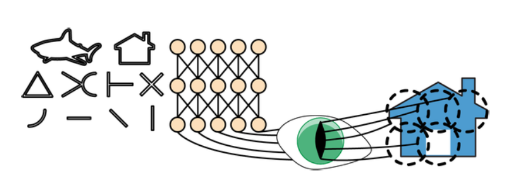
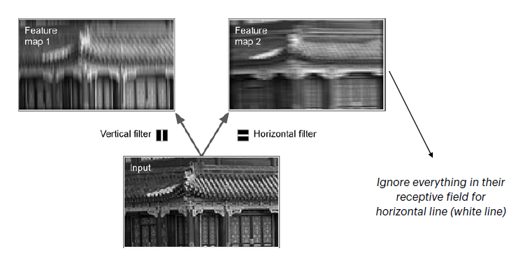
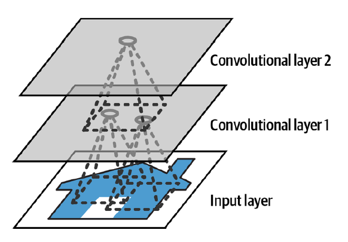
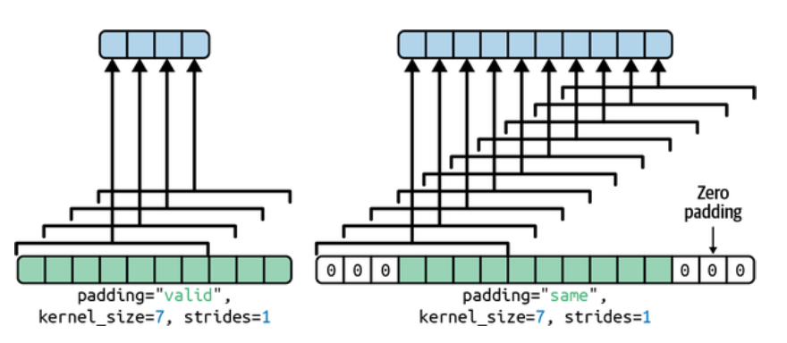
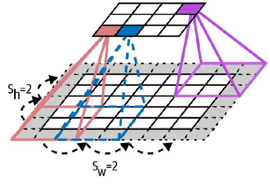
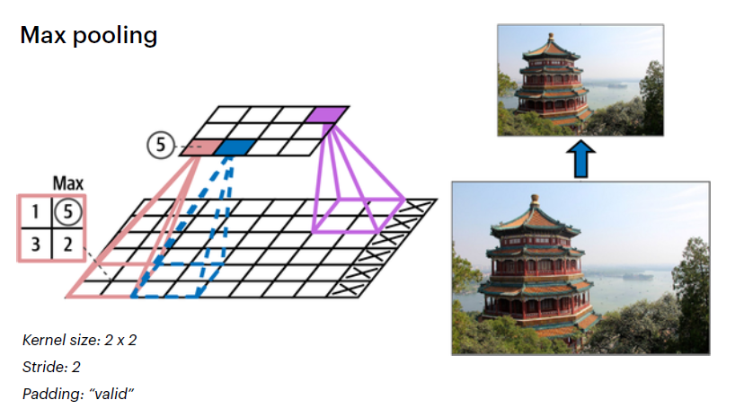
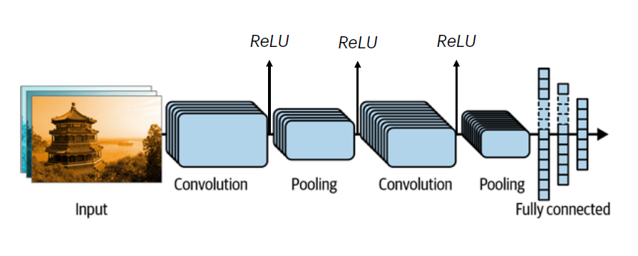

Los Bloques Fundamentales de las CNNs#
Objetivo: En este espacio, nos sumergiremos en la arquitectura que resuelve las limitaciones de las redes densas que vimos en la Sesión 1. Exploraremos los componentes clave que hacen que las Redes Neuronales Convolucionales (CNNs) sean tan efectivas para tareas de visión por computadora.
Recapitulación: ¿Por Qué Fallaron las Redes Densas?#
En la sesión anterior, vimos que incluso con diferentes arquitecturas, nuestras redes neuronales densas no superaban el 50% de precisión en CIFAR-10. Las razones fundamentales eran:
Pérdida de Información Espacial: Al usar la capa
Flatten, destruimos por completo la relación entre píxeles vecinos.Explosión de Parámetros: La conexión total generó un sobreajuste severo.
Falta de Invariancia a la Traslación: El modelo no podía reconocer un objeto si se movía en la imagen.
Las CNNs están diseñadas específicamente para resolver estos tres problemas.
La Inspiración: La Corteza Visual Biológica#
Las CNNs se inspiran en cómo funciona la corteza visual de los mamíferos. Las neuronas en la corteza visual reaccionan a patrones específicos dentro de una región limitada del campo visual, llamada campo receptivo.
El cerebro procesa la información de forma jerárquica: las características simples (líneas, bordes) se combinan en capas posteriores para detectar características más complejas (ojos, narices, rostros).
 La idea es que la red aprenda primero características simples (líneas, curvas) y luego las ensamble en conceptos más complejos (una casa).
1. La Capa Convolucional (Conv2D)#
Esta es el alma de la CNN. Utiliza filtros (o kernels) que actúan como detectores de características.
a. Filtros y Mapas de Características#
Un filtro es una pequeña matriz de pesos (ej. 3x3) que se “desliza” sobre la imagen de entrada. En cada posición, calcula un producto punto entre sus pesos y los píxeles de la imagen, aprendiendo a detectar un patrón específico (un borde, un color, etc.).
La salida de aplicar un filtro a toda la imagen se llama mapa de características (feature map). Es una nueva matriz que resalta las áreas donde se encontró la característica.

Un filtro vertical y uno horizontal aplicados a la misma imagen de entrada producen dos mapas de características diferentes, cada uno destacando un tipo de borde.
Una capa convolucional aplica múltiples filtros para crear múltiples mapas de características, permitiendo que la red aprenda a detectar muchos patrones diferentes simultáneamente.
b. Jerarquía de Características#
Las capas convolucionales se apilan. Las primeras capas aprenden características de bajo nivel. Las capas más profundas reciben los mapas de características de las capas anteriores y aprenden a combinar esos patrones simples en características de alto nivel.

Esta imagen muestra cómo las neuronas de la “Convolutional layer 2” observan patrones en la “Convolutional layer 1”, la cual a su vez observa la imagen de entrada. Así se construyen las características complejas.
c. Padding y Stride#
Padding (Relleno): Para evitar que los mapas de características se encojan con cada capa, podemos añadir un borde de ceros a la entrada.
padding="same"es la opción más común para mantener las dimensiones.
Este diagrama ilustra perfectamente la diferencia entre no usar padding (
valid) y usarlo para preservar el tamaño (same).Stride (Paso): Define el tamaño del salto que da el filtro al moverse por la imagen. Un
stridemayor a 1 reduce las dimensiones del mapa de características de salida.
Aquí vemos cómo un stride de 2x2 hace que el filtro salte 2 píxeles en cada paso, submuestreando la entrada.
2. La Capa de Agrupación o Pooling (MaxPooling2D)#
Su objetivo es submuestrear (reducir) los mapas de características para disminuir la carga computacional y el riesgo de sobreajuste. También proporciona un grado de invarianza a pequeñas traslaciones.
La técnica más común es Max Pooling, que toma el valor máximo de una pequeña ventana (ej. 2x2), conservando solo las características más fuertes.

Este diagrama muestra una ventana de 2x2 con un stride de 2 que reduce un mapa de 4x4 a uno de 2x2, quedándose solo con el valor máximo de cada cuadrante.
3. La Arquitectura Típica de una CNN#
Una CNN completa se construye apilando estos componentes, siguiendo un patrón clásico:
Bloques de Extracción de Características: Se apilan varios bloques de
[CONV -> RELU -> POOL].Bloque de Clasificación: Al final, los mapas de características se aplanan (
Flatten) y se conectan a capasDensepara la clasificación final.

Esta arquitectura resume el flujo completo: la imagen de entrada pasa por capas de convolución y pooling que extraen características, luego se aplana y se pasa a un clasificador totalmente conectado que produce la salida final (usando Softmax).
Conclusión#
Hemos desglosado los componentes que hacen a las CNNs tan poderosas. Entendemos cómo las capas Conv2D y MaxPooling2D trabajan juntas para aprender jerarquías de características de manera eficiente.